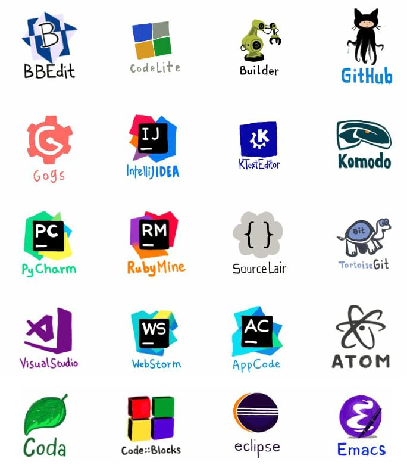
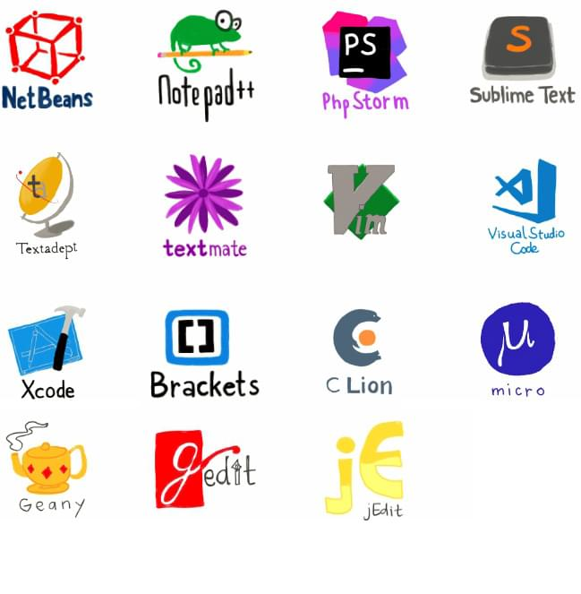

Shower Presentation Engine
Yours Truly, Famous Inc.
Автостопом по
CSS Style Guide Галактике
Виталий Рыбка
KharkivCSS #3
Апрель 2018
Что такое CSS Style Guide
?
Почему CSS Style Guide не приживается?
-
Разработчики не верят в то, что это необходимо
-
CSS Style Guide загоняет в рамки
-
CSS Style Guide - это затратная штука
-
CSS Style Guide = Refactoring
Какие проблемы решает CSS Style Guide
-
Привидение кодовой базы к структурированному, логическому виду
-
Простота адаптации нового члена команды
-
Все члены команды "говорят" на одном языке
-
Автоматизация Code Review (частично)
-
Увеличивается скорость разработки
Какие проблемы НЕ решает CSS Style Guide
-
CSS Style Guide не для конечного пользователя
-
Performance issues
-
Responsive issues
Перед стартом
-
Определиться с целями/проблемами
-
Определиться с терминами
-
Сделайте замеры, проведите аудит ваших стилей
-
Поймете, где у вас узкие места
-
Увидите на сколько у вас "раздутые" файлы со стилями
-
Осознаете необходимость внедрения CSS Style Guide
Настройка редактора


Это последний слайд
Все, кина на будет...
Fork me on GitHub